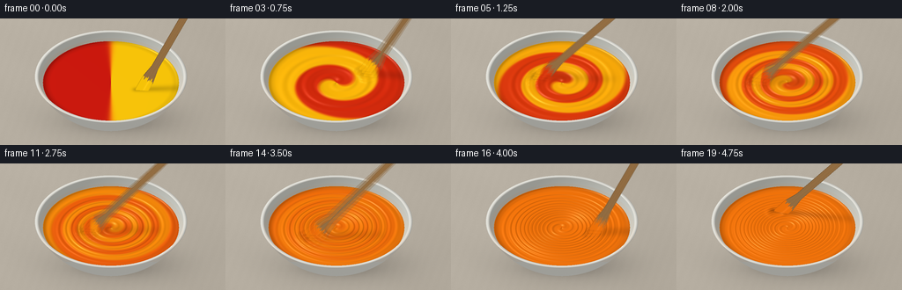
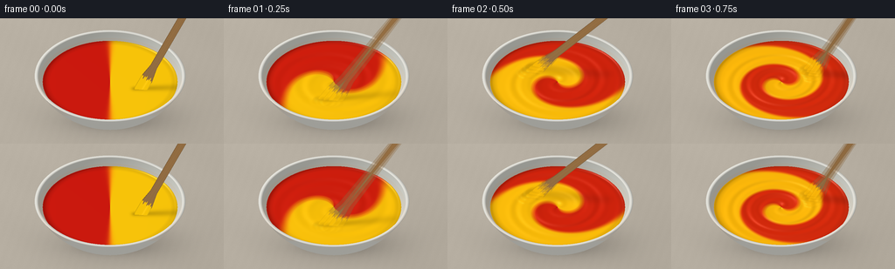

CODING AGENTS AS PIXEL WORLD MODELS
traex/GPT-6.1-Sol · phygen_122
点击播放 · 原生 RGB 像素
逐轮保存的候选
回放视频、检查图与代码变化。
每份候选均可单独播放。实际图片检查记录在下方工具轨迹中。
候选 01播放与检查图
点击播放 · 原生 RGB 像素


展开代码变化
--- 上一保存版本
+++ 本次保存版本
@@ -0,0 +1,221 @@
+from pathlib import Path
+import numpy as np
+from PIL import Image
+import artifact_io
+
+# An orthographic, analytic studio renderer. All surfaces and pigment fields
+# are constructed here, without image assets or rendering libraries.
+ROOT=Path(__file__).resolve().parent
+W,H=256,144
+SS=3
+w,h=W*SS,H*SS
+S=82.
+CX,CY=126.,109.
+E=np.array([0.,.61,-np.sqrt(1-.61**2)])
+V=np.array([0.,-E[2],E[1]])
+L=np.array([-.48,-.34,.81]); L/=np.linalg.norm(L)
+xx,yy=np.meshgrid((np.arange(w)+.5)/SS,(np.arange(h)+.5)/SS)
+X=(xx-CX)/S; Q=(yy-CY)/S
+P=np.stack([X,Q*E[1],Q*E[2]],axis=-1)
+rng=np.random.default_rng(122)
+noise=rng.normal(0,1,(h,w))
+
+
+def norm(a):
+ return a/np.maximum(np.linalg.norm(a,axis=-1,keepdims=True),1e-10)
+
+# Warm stone work surface with quiet material variation and a soft contact shadow.
+desk=np.empty((h,w,3),float)
+tex=1.1*noise + .5*np.sin(xx*.58+yy*.21)+.8*np.sin(xx*.052-yy*.09)
+lightfall=6*(1-xx/W)-4*yy/H
+for k,c in enumerate([180,172,159]): desk[...,k]=c+tex+lightfall
+shadow=np.exp(-(((xx-137)/79)**2+((yy-114)/24)**2)*1.5)
+contact=np.exp(-(((xx-126)/45)**2+((yy-120)/9)**2)*2)
+desk*= (1-.20*shadow-.14*contact)[...,None]
+
+# Ray intersections of concentric, trimmed ellipsoids form a real hollow bowl.
+base=desk.copy(); base_depth=np.full((h,w),-100.)
+
+def ceramic_shading(pos,normal,inside=False):
+ diffuse=np.clip(np.sum(normal*L,axis=-1),0,1)
+ half=norm(L+V)
+ spec=np.maximum(np.sum(normal*half,axis=-1),0)**65
+ broad=np.maximum(np.sum(normal*half,axis=-1),0)**7
+ albedo=np.array([237.,236.,228.]) if not inside else np.array([225.,226.,217.])
+ shade=.67+.30*diffuse
+ # Slightly warm bounced illumination along the low ceramic body.
+ col=albedo[None,None,:]*shade[...,None]+(22*spec+4*broad)[...,None]
+ col+=noise[...,None]*.32
+ return np.clip(col,0,255)
+
+def ellipse_surface(rad,zrad,zc,inner=False):
+ global base,base_depth
+ inv=np.array([1/rad**2,1/rad**2,1/zrad**2])
+ pp=P-np.array([0,0,zc])
+ a=np.sum(V*V*inv)
+ b=2*np.sum(pp*V*inv,axis=-1)
+ c=np.sum(pp*pp*inv,axis=-1)-1
+ det=b*b-4*a*c
+ root=np.sqrt(np.maximum(det,0))
+ for sign in [-1,1]:
+ d=(-b+sign*root)/(2*a)
+ pos=P+d[...,None]*V
+ valid=(det>=0)&(pos[...,2]<=.658)&(pos[...,2]>=.01)&(d>base_depth)
+ normal=norm((pos-np.array([0,0,zc]))*inv)
+ if inner:normal=-normal
+ col=ceramic_shading(pos,normal,inner)
+ base=np.where(valid[...,None],col,base)
+ base_depth=np.where(valid,d,base_depth)
+
+ellipse_surface(1.18,1.20,1.21)
+ellipse_surface(1.145,1.15,1.21,True)
+# A softly rounded white lip, whose surface normal turns over the edge.
+d=(.658-P[...,2])/V[2]
+pos=P+d[...,None]*V
+r=np.sqrt(pos[...,0]**2+pos[...,1]**2)
+valid=(r>=1.001)&(r<=1.053)&(d>base_depth)
+nrad=np.clip((r-1.027)/.027,-.99,.99)
+n=np.stack([nrad*pos[...,0]/np.maximum(r,1e-6),nrad*pos[...,1]/np.maximum(r,1e-6),np.sqrt(1-nrad*nrad)],axis=-1)
+base=np.where(valid[...,None],ceramic_shading(pos,n),base)
+base_depth=np.where(valid,d,base_depth)
+
+# The level of thick paint is just below the rim; the bowl occludes it in front.
+ZPAINT=.555
+PD=(ZPAINT-P[...,2])/V[2]
+PP=P+PD[...,None]*V
+PX,PY=PP[...,0],PP[...,1]
+PR=np.sqrt(PX*PX+PY*PY)
+paint_radius=1.145*np.sqrt(1-((ZPAINT-1.21)/1.15)**2)
+paint_mask=(PR<paint_radius)&(PD>base_depth)
+
+
+def stir_state(t):
+ # Six energetic revolutions, followed by a short final resting beat.
+ tt=min(max(t-.08,0),4.42)
+ theta=.45+2*np.pi*1.27*tt
+ radius=.43+.045*np.sin(tt*4)
+ start=np.array([radius*np.cos(theta),radius*np.sin(theta),ZPAINT-.07])
+ end=np.array([1.24+.055*np.cos(theta+.7),-.50+.045*np.sin(theta),1.87])
+ D=norm(end-start)
+ U=norm(np.cross(D,V))
+ N=norm(np.cross(U,D))
+ if np.dot(N,V)<0:N=-N
+ return start,end,D,U,N
+
+
+def pigment(t,x,y):
+ r=np.sqrt(x*x+y*y)
+ a=np.arctan2(y,x)
+ twist=(2.8+8.8*np.exp(-r*r/.34))*t
+ ph=a-twist
+ sharp=max(2.,18.*np.exp(-t*.60))
+ amp=max(0.,1-(t/3.85)**1.55)*np.exp(-.18*t)
+ c=.5+.5*amp*np.tanh(sharp*np.cos(ph))
+ red=np.array([204.,23.,12.]);yellow=np.array([251.,198.,8.])
+ col=red+(yellow-red)*c[...,None]
+ col+=np.array([14.,4.,0.])[None,None,:]*(4*c*(1-c))[...,None]
+ return col,ph
+
+
+def heightfield(t,x,y,start):
+ r=np.sqrt(x*x+y*y)
+ a=np.arctan2(y,x)
+ phase=a-(2.8+8.8*np.exp(-r*r/.34))*t
+ active=min(1.,t*3)* (1 if t<4.5 else .60)
+ # Glossy spiral crests, central vortex and a displaced shoulder at the paddle.
+ fade=np.clip(1-(r/paint_radius)**6,0,1)
+ z=.014*(1-(r/paint_radius)**2)
+ z+=active*.0055*fade*np.sin(phase*2+19*r)
+ z+=active*.0022*fade*np.sin(phase*4+29*r)
+ z-=active*.031*np.exp(-r*r/.07)
+ ds=(x-start[0])**2+(y-start[1])**2
+ z-=active*.030*np.exp(-ds/.012)
+ z+=active*.022*np.exp(-((np.sqrt(ds)-.115)/.042)**2)
+ # Meniscus wetting the ceramic, not a dry flat colour disk.
+ z+=.016*np.exp(-((r-paint_radius)/.026)**2)
+ return z
+
+
+def wood(t,depth,img,start,end,D,U,N):
+ # Plane intersections of a bevelled, flat wooden mixing paddle.
+ origin=start
+ halfth=.024
+ denom=np.dot(V,N)
+ dd=(np.dot(origin,N)+halfth-np.sum(P*N,axis=-1))/denom
+ hit=P+dd[...,None]*V
+ rel=hit-origin
+ longitudinal=np.sum(rel*D,axis=-1)
+ across=np.sum(rel*U,axis=-1)
+ length=np.linalg.norm(end-start)+.38
+ width=.052+.036*np.clip((.45-longitudinal)/.20,0,1)
+ rounded=np.sqrt(np.clip(1-((longitudinal-.075)/.075)**2,0,1))
+ width=np.where(longitudinal<.075,.088*rounded,width)
+ valid=(longitudinal>=0)&(longitudinal<length)&(np.abs(across)<width)&(dd>depth)
+ grain=2.6*np.sin(across*420+1.8*np.sin(longitudinal*6))+1.1*np.sin(across*920+longitudinal*2)
+ grain+=1.7*np.sin(across*155+longitudinal*1.4)
+ edge=np.clip((width-np.abs(across))/.012,0,1)
+ shading=(.76+.23*np.maximum(np.dot(N,L),0))*(.77+.23*edge)
+ color=np.stack([184.+grain,137.+grain*.85,83.+grain*.65],axis=-1)*shading[...,None]
+ fine=np.sin(across*1800+longitudinal*11)
+ color+=fine[...,None]*.5
+ # Wet coating is drawn on the submerged blade, with irregular dragged edges.
+ coatlevel=.26+.02*np.sin(across*100)+.018*np.sin(across*233)
+ coating=(longitudinal<coatlevel)
+ pigment_col,_=pigment(t,hit[...,0],hit[...,1])
+ pigment_col= pigment_col*(.8+.18*edge[...,None])
+ shine=np.exp(-((across+.023)/.012)**2)*11
+ pigment_col+=shine[...,None]
+ color=np.where(coating[...,None],pigment_col,color)
+ # Thin bevel highlight along the illuminated wooden edge.
+ color+=np.exp(-((across+width-.003)/.004)**2)[...,None]*11
+ img=np.where(valid[...,None],color,img)
+ return img
+
+
+def render(t):
+ start,end,D,U,N=stir_state(t)
+ colors,phase=pigment(t,PX,PY)
+ eps=.002
+ gx=(heightfield(t,PX+eps,PY,start)-heightfield(t,PX-eps,PY,start))/(2*eps)
+ gy=(heightfield(t,PX,PY+eps,start)-heightfield(t,PX,PY-eps,start))/(2*eps)
+ n=norm(np.stack([-gx,-gy,np.ones_like(gx)],axis=-1))
+ diffuse=np.maximum(np.sum(n*L,axis=-1),0)
+ hv=norm(L+V)
+ spec=np.maximum(np.sum(n*hv,axis=-1),0)
+ colors*= (.76+.27*diffuse)[...,None]
+ # Softbox reflection and smaller, high-gloss streaks on thick wet ridges.
+ colors+=(20*spec**22+44*spec**100)[...,None]
+ # Near-wall darkening and a contact shadow from the wooden blade.
+ edge=np.clip((PR/paint_radius-.89)/.11,0,1)
+ colors*= (1-.15*edge)[...,None]
+ sa=start.copy();sb=start+D*.94
+ sa[:2]-=(sa[2]-ZPAINT)*L[:2]/L[2]
+ sb[:2]-=(sb[2]-ZPAINT)*L[:2]/L[2]
+ vec=sb[:2]-sa[:2]
+ f=np.clip(((PX-sa[0])*vec[0]+(PY-sa[1])*vec[1])/np.dot(vec,vec),0,1)
+ dis=(PX-sa[0]-f*vec[0])**2+(PY-sa[1]-f*vec[1])**2
+ shade=.22*np.exp(-dis/(.0022+.006*f))*(1-.65*f)
+ colors*= (1-shade)[...,None]
+ # Warm reflected pigment on the inside of the ceramic next to the surface.
+ img=base.copy()
+ tint=(~paint_mask)&(PR<paint_radius+.065)&(PR>paint_radius)&(yy<112)&(base_depth>-10)
+ img[tint]=img[tint]*.97+np.array([7.,2.,-2.])
+ img=np.where(paint_mask[...,None],colors,img)
+ depth=np.where(paint_mask,PD,base_depth)
+ img=wood(t,depth,img,start,end,D,U,N)
+ return np.clip(img,0,255)
+
+
+def main():
+ frames=[]
+ for i in range(20):
+ t=i/4.
+ # A short photographic shutter gives a natural trace of vigorous motion.
+ times=[t] if i==0 or i>=18 else [max(0,t-.021),t,t+.021]
+ arr=sum(render(ts) for ts in times)/len(times)
+ image=Image.fromarray(np.uint8(np.clip(arr,0,255))).resize((W,H),Image.Resampling.LANCZOS)
+ frames.append(np.array(image))
+ print(f'frame {i:02d} rendered',flush=True)
+ artifact_io.save(np.stack(frames),ROOT)
+
+if __name__=='__main__':main()
可观测工具轨迹
实际执行的命令与返回图片。
命令 1exit 0
/bin/bash -lc 'ls -la && cat prompt.txt && cat GENERATION_RULES.md && cat task_spec.json'
命令 2exit 0
/bin/bash -lc "cat artifact_io.py && python - <<'PY'
import numpy, PIL
print('numpy', numpy.__version__)
PY"命令 3exit 0
/bin/bash -lc "cat > generate.py <<'PY'
from pathlib import Path
import numpy as np
from PIL import Image
import artifact_io
# An orthographic, analytic studio renderer. All surfaces and pigment fields
# are constructed here, without image assets or rendering libraries.
ROOT=Path(__file__).resolve().parent
W,H=256,144
SS=3
w,h=W*SS,H*SS
S=82.
CX,CY=126.,109.
E=np.array([0.,.61,-np.sqrt(1-.61**2)])
V=np.array([0.,-E[2],E[1]])
L=np.array([-.48,-.34,.81]); L/=np.linalg.norm(L)
xx,yy=np.meshgrid((np.arange(w)+.5)/SS,(np.arange(h)+.5)/SS)
X=(xx-CX)/S; Q=(yy-CY)/S
P=np.stack([X,Q*E[1],Q*E[2]],axis=-1)
rng=np.random.default_rng(122)
noise=rng.normal(0,1,(h,w))
def norm(a):
return a/np.maximum(np.linalg.norm(a,axis=-1,keepdims=True),1e-10)
# Warm stone work surface with quiet material variation and a soft contact shadow.
desk=np.empty((h,w,3),float)
tex=1.1*noise + .5*np.sin(xx*.58+yy*.21)+.8*np.sin(xx*.052-yy*.09)
lightfall=6*(1-xx/W)-4*yy/H
for k,c in enumerate([180,172,159]): desk[...,k]=c+tex+lightfall
shadow=np.exp(-(((xx-137)/79)**2+((yy-114)/24)**2)*1.5)
contact=np.exp(-(((xx-126)/45)**2+((yy-120)/9)**2)*2)
desk*= (1-.20*shadow-.14*contact)[...,None]
# Ray intersections of concentric, trimmed ellipsoids form a real hollow bowl.
base=desk.copy(); base_depth=np.full((h,w),-100.)
def ceramic_shading(pos,normal,inside=False):
diffuse=np.clip(np.sum(normal*L,axis=-1),0,1)
half=norm(L+V)
spec=np.maximum(np.sum(normal*half,axis=-1),0)**65
broad=np.maximum(np.sum(normal*half,axis=-1),0)**7
albedo=np.array([237.,236.,228.]) if not inside else np.array([225.,226.,217.])
shade=.67+.30*diffuse
# Slightly warm bounced illumination along the low ceramic body.
col=albedo[None,None,:]*shade[...,None]+(22*spec+4*broad)[...,None]
col+=noise[...,None]*.32
return np.clip(col,0,255)
def ellipse_surface(rad,zrad,zc,inner=False):
global base,base_depth
inv=np.array([1/rad**2,1/rad**2,1/zrad**2])
pp=P-np.array([0,0,zc])
a=np.sum(V*V*inv)
b=2*np.sum(pp*V*inv,axis=-1)
c=np.sum(pp*pp*inv,axis=-1)-1
det=b*b-4*a*c
root=np.sqrt(np.maximum(det,0))
for sign in [-1,1]:
d=(-b+sign*root)/(2*a)
pos=P+d[...,None]*V
valid=(det>=0)&(pos[...,2]<=.658)&(pos[...,2]>=.01)&(d>base_depth)
normal=norm((pos-np.array([0,0,zc]))*inv)
if inner:normal=-normal
col=ceramic_shading(pos,normal,inner)
base=np.where(valid[...,None],col,base)
base_depth=np.where(valid,d,base_depth)
ellipse_surface(1.18,1.20,1.21)
ellipse_surface(1.145,1.15,1.21,True)
# A softly rounded white lip, whose surface normal turns over the edge.
d=(.658-P[...,2])/V[2]
pos=P+d[...,None]*V
r=np.sqrt(pos[...,0]**2+pos[...,1]**2)
valid=(r>=1.001)&(r<=1.053)&(d>base_depth)
nrad=np.clip((r-1.027)/.027,-.99,.99)
n=np.stack([nrad*pos[...,0]/np.maximum(r,1e-6),nrad*pos[...,1]/np.maximum(r,1e-6),np.sqrt(1-nrad*nrad)],axis=-1)
base=np.where(valid[...,None],ceramic_shading(pos,n),base)
base_depth=np.where(valid,d,base_depth)
# The level of thick paint is just below the rim; the bowl occludes it in front.
ZPAINT=.555
PD=(ZPAINT-P[...,2])/V[2]
PP=P+PD[...,None]*V
PX,PY=PP[...,0],PP[...,1]
PR=np.sqrt(PX*PX+PY*PY)
paint_radius=1.145*np.sqrt(1-((ZPAINT-1.21)/1.15)**2)
paint_mask=(PR<paint_radius)&(PD>base_depth)
def stir_state(t):
# Six energetic revolutions, followed by a short final resting beat.
tt=min(max(t-.08,0),4.42)
theta=.45+2*np.pi*1.27*tt
radius=.43+.045*np.sin(tt*4)
start=np.array([radius*np.cos(theta),radius*np.sin(theta),ZPAINT-.07])
end=np.array([1.24+.055*np.cos(theta+.7),-.50+.045*np.sin(theta),1.87])
D=norm(end-start)
U=norm(np.cross(D,V))
N=norm(np.cross(U,D))
if np.dot(N,V)<0:N=-N
return start,end,D,U,N
def pigment(t,x,y):
r=np.sqrt(x*x+y*y)
a=np.arctan2(y,x)
twist=(2.8+8.8*np.exp(-r*r/.34))*t
ph=a-twist
sharp=max(2.,18.*np.exp(-t*.60))
amp=max(0.,1-(t/3.85)**1.55)*np.exp(-.18*t)
c=.5+.5*amp*np.tanh(sharp*np.cos(ph))
red=np.array([204.,23.,12.]);yellow=np.array([251.,198.,8.])
col=red+(yellow-red)*c[...,None]
col+=np.array([14.,4.,0.])[None,None,:]*(4*c*(1-c))[...,None]
return col,ph
def heightfield(t,x,y,start):
r=np.sqrt(x*x+y*y)
a=np.arctan2(y,x)
phase=a-(2.8+8.8*np.exp(-r*r/.34))*t
active=min(1.,t*3)* (1 if t<4.5 else .60)
# Glossy spiral crests, central vortex and a displaced shoulder at the paddle.
fade=np.clip(1-(r/paint_radius)**6,0,1)
z=.014*(1-(r/paint_radius)**2)
z+=active*.0055*fade*np.sin(phase*2+19*r)
z+=active*.0022*fade*np.sin(phase*4+29*r)
z-=active*.031*np.exp(-r*r/.07)
ds=(x-start[0])**2+(y-start[1])**2
z-=active*.030*np.exp(-ds/.012)
z+=active*.022*np.exp(-((np.sqrt(ds)-.115)/.042)**2)
# Meniscus wetting the ceramic, not a dry flat colour disk.
z+=.016*np.exp(-((r-paint_radius)/.026)**2)
return z
def wood(t,depth,img,start,end,D,U,N):
# Plane intersections of a bevelled, flat wooden mixing paddle.
origin=start
halfth=.024
denom=np.dot(V,N)
dd=(np.dot(origin,N)+halfth-np.sum(P*N,axis=-1))/denom
hit=P+dd[...,None]*V
rel=hit-origin
longitudinal=np.sum(rel*D,axis=-1)
across=np.sum(rel*U,axis=-1)
length=np.linalg.norm(end-start)+.38
width=.052+.036*np.clip((.45-longitudinal)/.20,0,1)
rounded=np.sqrt(np.clip(1-((longitudinal-.075)/.075)**2,0,1))
width=np.where(longitudinal<.075,.088*rounded,width)
valid=(longitudinal>=0)&(longitudinal<length)&(np.abs(across)<width)&(dd>depth)
grain=2.6*np.sin(across*420+1.8*np.sin(longitudinal*6))+1.1*np.sin(across*920+longitudinal*2)
grain+=1.7*np.sin(across*155+longitudinal*1.4)
edge=np.clip((width-np.abs(across))/.012,0,1)
shading=(.76+.23*np.maximum(np.dot(N,L),0))*(.77+.23*edge)
color=np.stack([184.+grain,137.+grain*.85,83.+grain*.65],axis=-1)*shading[...,None]
fine=np.sin(across*1800+longitudinal*11)
color+=fine[...,None]*.5
# Wet coating is drawn on the submerged blade, with irregular dragged edges.
coatlevel=.26+.02*np.sin(across*100)+.018*np.sin(across*233)
coating=(longitudinal<coatlevel)
pigment_col,_=pigment(t,hit[...,0],hit[...,1])
pigment_col= pigment_col*(.8+.18*edge[...,None])
shine=np.exp(-((across+.023)/.012)**2)*11
pigment_col+=shine[...,None]
color=np.where(coating[...,None],pigment_col,color)
# Thin bevel highlight along the illuminated wooden edge.
color+=np.exp(-((across+width-.003)/.004)**2)[...,None]*11
img=np.where(valid[...,None],color,img)
return img
def render(t):
start,end,D,U,N=stir_state(t)
colors,phase=pigment(t,PX,PY)
eps=.002
gx=(heightfield(t,PX+eps,PY,start)-heightfield(t,PX-eps,PY,start))/(2*eps)
gy=(heightfield(t,PX,PY+eps,start)-heightfield(t,PX,PY-eps,start))/(2*eps)
n=norm(np.stack([-gx,-gy,np.ones_like(gx)],axis=-1))
diffuse=np.maximum(np.sum(n*L,axis=-1),0)
hv=norm(L+V)
spec=np.maximum(np.sum(n*hv,axis=-1),0)
colors*= (.76+.27*diffuse)[...,None]
# Softbox reflection and smaller, high-gloss streaks on thick wet ridges.
colors+=(20*spec**22+44*spec**100)[...,None]
# Near-wall darkening and a contact shadow from the wooden blade.
edge=np.clip((PR/paint_radius-.89)/.11,0,1)
colors*= (1-.15*edge)[...,None]
sa=start.copy();sb=start+D*.94
sa[:2]-=(sa[2]-ZPAINT)*L[:2]/L[2]
sb[:2]-=(sb[2]-ZPAINT)*L[:2]/L[2]
vec=sb[:2]-sa[:2]
f=np.clip(((PX-sa[0])*vec[0]+(PY-sa[1])*vec[1])/np.dot(vec,vec),0,1)
dis=(PX-sa[0]-f*vec[0])**2+(PY-sa[1]-f*vec[1])**2
shade=.22*np.exp(-dis/(.0022+.006*f))*(1-.65*f)
colors*= (1-shade)[...,None]
# Warm reflected pigment on the inside of the ceramic next to the surface.
img=base.copy()
tint=(~paint_mask)&(PR<paint_radius+.065)&(PR>paint_radius)&(yy<112)&(base_depth>-10)
img[tint]=img[tint]*.97+np.array([7.,2.,-2.])
img=np.where(paint_mask[...,None],colors,img)
depth=np.where(paint_mask,PD,base_depth)
img=wood(t,depth,img,start,end,D,U,N)
return np.clip(img,0,255)
def main():
frames=[]
for i in range(20):
t=i/4.
# A short photographic shutter gives a natural trace of vigorous motion.
times=[t] if i==0 or i>=18 else [max(0,t-.021),t,t+.021]
arr=sum(render(ts) for ts in times)/len(times)
image=Image.fromarray(np.uint8(np.clip(arr,0,255))).resize((W,H),Image.Resampling.LANCZOS)
frames.append(np.array(image))
print(f'frame {i:02d} rendered',flush=True)
artifact_io.save(np.stack(frames),ROOT)
if __name__=='__main__':main()
PY
python generate.py"命令 4exit 0
/bin/bash -lc "python - <<'PY'
from pathlib import Path
import numpy as np
import generate as g
p=Path('.')
a=np.load('pixels.npz')['pixels']
assert a.shape==(144,256,20)
assert len(list((p/'frames').glob('*.png')))==20
col,_=g.pigment(0,g.PX,g.PY)
sel=g.paint_mask
red=(col[...,1]<70)&sel
yellow=(col[...,1]>155)&sel
print('Pixels tensor:', a.shape, a.dtype)
print('Initial red/yellow area:',red.sum(),yellow.sum())
print('Paint visible area:',sel.sum()/(g.SS**2),'pixels')
print('Frame variation:', [int(np.count_nonzero(a[:,:,i]"'!=a[:,:,i-1])) for i in [1,5,10,15,19]])
for name in ['"'generate.py','pixels.npz','index.html','inspection.png']:
print(name,(p/name).stat().st_size,'bytes')
PY"保存候选 1 份；完成命令 4 次；可验证图片返回 0 张。原始 API 响应与完整日志保留在本地。